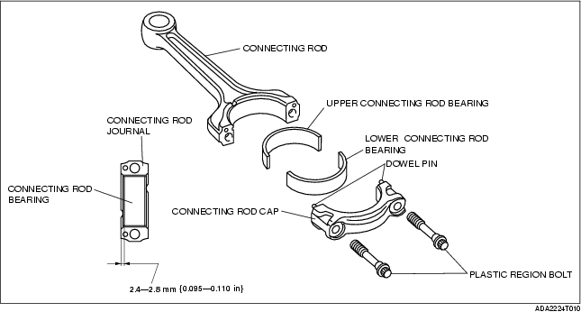

CONNECTING ROD, CONNECTING ROD BEARING CONSTRUCTION [ZY]
id0110001007c0
• The connecting rod is made of structurally sintered alloy to improve rigidity.
• The connecting rod bearing and the connecting rod cap are cast as a single unit.
• Dowel pins have been adopted on the connection area of the connecting rod and the connecting rod cap for assembly precision improvement.
• Plastic tightening bolts have been adopted for the connecting rod bolts, which are tightened in two steps to insure tightening stability.
• There is no positioning tab for the large end of the connecting rod bearing. When installing the bearing, measure so that the connecting rod and the bearing cap are positioned in the center.

• The upper and lower bearing of the connecting rod bearing is made of aluminum alloy.
• There are three kinds of connecting rod bearings depending on the oil clearance.
|
Bearing size
|
ZY
|
|
Bearing thickness (mm {in})
|
|
Standard
|
1.509-1.524 {0.0594-0.0600}
|
|
0.25 {0.01} Oversize
|
1.629-1.637 {0.0642-0.0599}
|
|
0.50 {0.02} Oversize
|
1.754-1.762 {0.0691-0.0693}
|